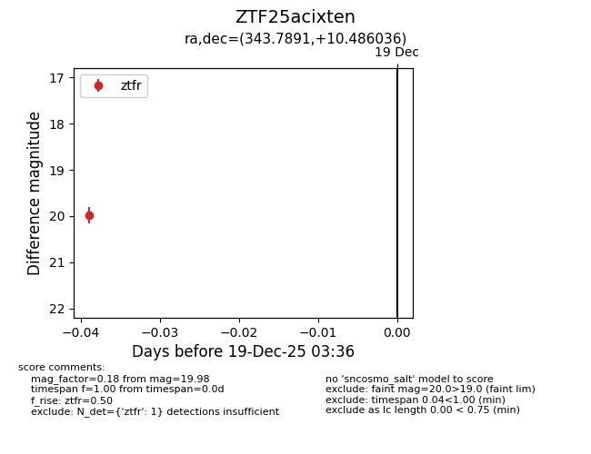
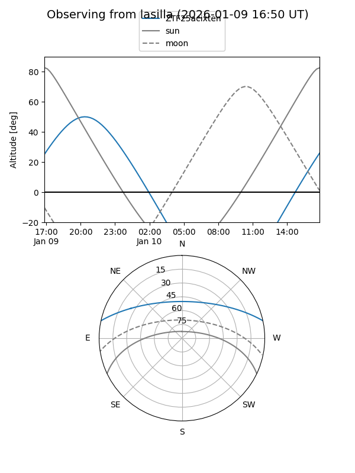
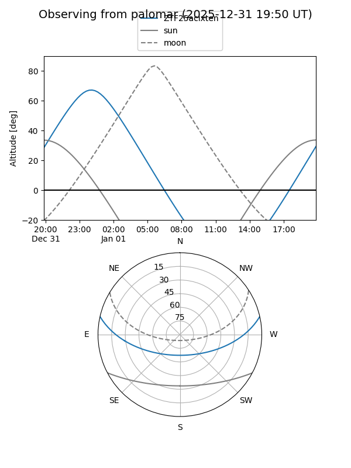

ZTF25acixten
Target ZTF25acixten at 2025-12-19 03:37
Aliases and brokers:
FINK: fink-portal.org/ZTF25acixten
Lasair: lasair-ztf.lsst.ac.uk/objects/ZTF25acixten
ALeRCE: alerce.online/object/ZTF25acixten
alt names
ZTF25acixten (ztf,fink_ztf)
Coordinates:
equatorial (ra, dec) = 343.7891,+10.48604
equatorial (HMS+DMS) = 22:55:09.38,+10:29:09.73
galactic (l, b) = (82.1503,-42.99170)
Flags:
Photometry:
last ztfr=19.98
1 ztfr detections
Lightcurve

Visibility


Additional plots